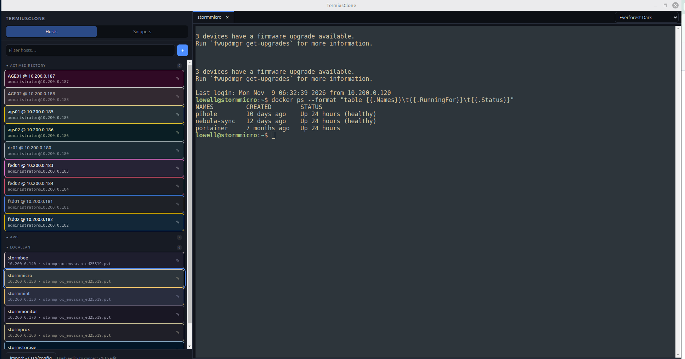

A small Electron SSH client built around the two Termius features worth having without a subscription:
.pem/.key on disk, and the session is launched as ssh -i /path/to/ubuntukeypair.pem ubuntu@ec2-35-….compute.amazonaws.com.
one click.
It shells out to your system ssh, so your ~/.ssh/config, agent, known_hosts and OpenSSH version all behave exactly as they do in a terminal.
npm install # also rebuilds node-pty against Electron's ABI
npm start # or ./run.shThe icon is original artwork, not Termius's — generated by assets/make-icon.py into build/icons/ at sizes 16 through 1024 plus an .ico. Edit the colours or geometry at the top of that script and re-run it:
python3 assets/make-icon.pyIt is set as the window/taskbar icon automatically. To add TermiusClone to the Linux Mint application menu with the icon installed into the hicolor theme:
./install-desktop.sh # undo: rm ~/.local/share/applications/termiusclone.desktop+ in the Hosts pane adds a host; the pencil (✎) on any row edits it (also right-click the row, or focus it and press e/F2). Double-click a row to connect. Fields map one-to-one onto ssh flags, and the dialog shows the exact command it will run as you type:
| Field | Flag | | -------------------- | ---- | | Username / Hostname | user@host | | Port | -p (omitted when 22) | | Private key file | -i plus -o IdentitiesOnly=yes | | Jump host | -J | | Forward SSH agent | -A | | Extra ssh arguments | passed through verbatim (quotes honoured), e.g. -L 8080:localhost:80 |
The hostname field accepts more than a hostname. Drop in any of these and it splits itself across the right fields:
ubuntu@ec2-35-0-0-1.compute.amazonaws.com
ubuntu@10.0.0.5:2222
ssh -i "ubuntukeypair.pem" ubuntu@ec2-35-0-0-1.compute.amazonaws.com
ssh -p 2222 -J bastion -A -L 8080:localhost:80 ubuntu@internal.host-i, -p, -J, -l and -A land in their own fields; -o, -L, -R, -D and -F go to Extra ssh arguments. Fields you already filled in win over what the pasted string implies. The parse runs on paste and on leaving the field, and the same unpacking happens again at save time as a safety net.
Three modes per host:
-i <path>. Saving is blocked until a key is actually chosen,so a half-filled host cannot be created.
the terminal.
-i, no password; your agent and ~/.ssh/config decide.
Password mode also sends -o PreferredAuthentications=password,keyboard-interactive and -o PubkeyAuthentication=no, so the prompt arrives immediately instead of after a round of key attempts.
How the password is delivered. If sshpass is installed it is used as sshpass -e ssh …, which reads the password from the SSHPASS environment variable — it never appears in the process argument list where another user could read it off ps. Install it with sudo apt install sshpass.
Without sshpass, TermiusClone types the password into the pty itself when it sees SSH's own password prompt. This is deliberately narrow: it fires at most once, only within 20 seconds of connecting, only for SSH's prompt shapes (user@host's password:, Password:, (user@host) Password:), and never for anything matching sudo or passphrase. A rejected password falls through to you to type.
How the password is stored. Encrypted with Electron's safeStorage, which defers to the desktop keyring — verified here as gnome_libsecret. Only the ciphertext is written to config.json, and plaintext never crosses back into the UI: it is decrypted in the main process at the moment of connect. The host editor reports the active backend, and says so plainly if no keyring is reachable and Chromium has fallen back to basic_text, which only obfuscates.
Key permissions. OpenSSH refuses a private key that is group- or world-readable. The key picker warns about it, and on connect you get a prompt to chmod 600 the file and retry.
Import. Import ~/.ssh/config pulls in Host entries (HostName, User, Port, IdentityFile, ProxyJump, ForwardAgent), skipping wildcard patterns and anything already present.
A snippet is a name plus a command. Single-click runs it in the active tab; the pencil (✎), right-click, or e/F2 edits it. Multi-line snippets are sent line by line, so the remote shell sees separate commands.
| Key | Action | | --- | ------ | | Enter on a host (or in the filter box) | Connect | | e or F2 on a host or snippet | Edit | | Ctrl+Shift+H / Ctrl+Shift+S | Focus the host / snippet filter | | Ctrl+Shift+W | Close the active session tab |
Everything lives in ~/.config/termiusclone/config.json (mode 600), written atomically. Key files are referenced by path only — no key material is ever copied into the config. Passwords are stored as keyring-encrypted ciphertext, or not at all if you leave the field blank. Chromium's own state goes in electron-data/ beside it.
src/main/main.js window, IPC handlers
src/main/store.js config.json read/write, host & snippet CRUD
src/main/sshcmd.js ssh argv builder, key-permission checks
src/main/sessions.js node-pty session lifecycle
src/main/sshconfig.js ~/.ssh/config parser
src/main/secrets.js safeStorage password encryption
src/main/preload.js contextBridge API
src/renderer/ UI (xterm.js terminals, host list, snippet library)
assets/make-icon.py icon generator -> build/icons/
install-desktop.sh optional application-menu entryELECTRON_RUN_AS_NODE=1 in the environment makes the electron binary start as plain Node and require('electron') return a path string. run.sh and the start script clear it.
would rather store nothing, leave the password blank and type it at the prompt; password mode works fine that way.